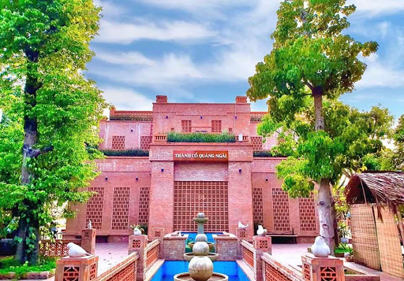

Thành Cổ Quảng Ngãi
Thành cổ Quảng Ngãi, còn gọi là Cẩm thành hay thành Gấm, là một thành lũy được xây dựng vào năm 1807 thời nhà Nguyễn ở Quảng Ngãi, Việt Nam. Thành cổ Quảng Ngãi là trong 29 thành được xây dựng ở thời nhà Nguyễn.
Trước năm 1945, thành được dùng làm trung tâm hành chính của nhà Nguyễn và của chính quyền thực dân Pháp. Năm 1947, thành đã bị Việt Minh thực hiện tiêu thổ kháng chiến phá hủy hoàn toàn. Cùng năm này, thực dân Pháp cũng đã lên núi Thiên Ấn và đốt cháy điện Thiên Ấn trong khuôn viên chùa Thiên Ấn. Thành cổ hiện chỉ còn dấu tích nằm phía trước khách sạn Ninh Thọ, thuộc khuôn viên quảng trường tỉnh Quảng Ngãi, cạnh một con đường nằm ở phía đông nam thị xã Quảng Ngãi trước đây. Năm 2005, nó được đổi thành đường Phạm Văn Đồng.
Tìm hiểu thêm trên Wikipedia
